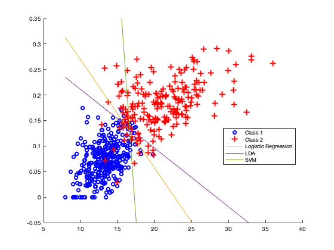

clear all;
data = readtable('bc_wisc.csv');
data = data.Variables;
y = data(:,2);
X = data(:,3:end);
methods = ["logistic" ;"lda"; "svm"];
disp("3a) Below is the average accuracy for each fold in 5-fold cross validation ");
average_accuracy=perform_cross_validation(X, y, 5, methods);
disp("Logistic Reg LDA SVM ");
disp(average_accuracy);
disp("Average accuracy of LDA is highest in the all the folds, so we should select LDA");
disp(" ");
fprintf("3b) Visualisation of data.\n");
X = data(:,[23,30]);
y = data(:,2);
hold on
gscatter(X(:,1),X(:,2),y, 'br','o+')
B_glm = glmfit(X,y,'binomial');
x_axis = [min(X(:,1)), max(X(:,1))];
y_axis_1 = -(B_glm(1)+B_glm(2) * x_axis)/B_glm(3);
[class,err,POSTERIOR,logp,B_lda] = classify(X, X, y);
y_axis_2 = -(B_lda(1,2).const+B_lda(1,2).linear(1) * x_axis)/B_lda(1,2).linear(2);
svm_mdl = fitcsvm(X,y);
y_axis_3 = -(svm_mdl.Bias+svm_mdl.Beta(1) * x_axis)/svm_mdl.Beta(2);
fprintf("Below is the scatter plot of data considering two featues: 21 and 28 \n");
plot(x_axis,y_axis_1, x_axis,y_axis_2, x_axis,y_axis_3);
ylim([-0.05 0.35]);
legend('Class 1', 'Class 2', 'Logistic Regression', 'LDA', 'SVM');
function average_accuracy=perform_cross_validation(X,Y,k, methods)
average_accuracy = zeros(k,size(methods,1));
for j = 1:length(methods)
chunk_size = size(Y,1)/k;
for i=1:k
index = (i * chunk_size) - chunk_size;
X_test = X(index+1:index+chunk_size, :);
Y_test = Y(index+1:index+chunk_size, :);
X_train = [X(1:index, :);X(index+chunk_size+1:end, :)];
Y_train = [Y(1:index);Y(index+chunk_size+1:end)];
if methods(j) == "logistic"
B_glm = glmfit(X_train,Y_train,'binomial');
X_test = [ones(size(Y_test)), X_test];
y_pred = X_test*B_glm>=0;
average_accuracy(i,j) = sum(y_pred==Y_test)/length(y_pred);
elseif methods(j) == "lda"
y_pred = classify(X_test, X_train, Y_train);
average_accuracy(i,j) = sum(y_pred==Y_test)/length(y_pred);
else
mdl = fitcsvm(X_train,Y_train);
average_accuracy(i,j) = sum(Y_test==predict(mdl, X_test))/length(y_pred);
end
end
end
end
3a) Below is the average accuracy for each fold in 5-fold cross validation
Logistic Reg LDA SVM
0.9375 0.9732 0.9554
0.9196 0.9286 0.9196
0.9732 0.9732 0.9732
0.9286 0.9554 0.9464
0.9464 0.9643 0.9554
Average accuracy of LDA is highest in the all the folds, so we should select LDA
3b) Visualisation of data.
Below is the scatter plot of data considering two featues: 21 and 28
